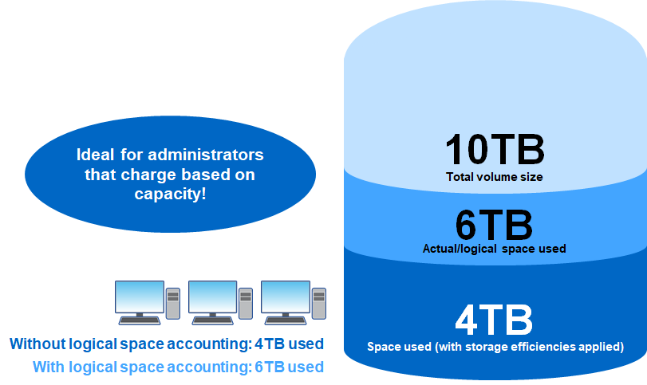

要求變更文件
要求變更文件 編輯此頁面
編輯此頁面 瞭解如何作出貢獻
瞭解如何作出貢獻其他重大新增項目
除了System Manager的增強功能、SAN增強功能和資料保護增強功能之外、ONTAP 還有一些其他功能可大幅提升至《更新版本》。
邏輯空間會計/強制實施–FlexGroup 等量磁碟區
在引用邏輯空間會計的FlexVol 過程中、將資料納入ONTAP 到了有關資料的資料中。它可讓儲存管理員遮罩儲存效率節約效益、讓終端使用者避免過度配置指定的儲存配額。
例如、如果使用者將6TB寫入10TB磁碟區、而儲存效率則可節省2TB、則邏輯空間會計可控制使用者看到的是6TB或4TB。

藉由根據邏輯空間臨界值設定的新寫入、支援FlexVols的功能更強大、並增加配額強制支援、讓儲存管理員能夠更有效地控制。ONTAP然而FlexGroup 、直到ONTAP 支援到支援的問題9.9.1之前、才會出現這個功能。
使用者定義的中繼資料標記ONTAP
介紹S3傳輸協定的支援功能、以提供基本的物件儲存功能。ONTAP
支援S3 in ONTAP the S59.8包括下列項目：
-
基本放置/取得物件存取（不包括從同一個儲存區存取S3和NAS）
-
不支援物件標記或ILM；若為功能豐富、遍佈全球的S3、請使用 "NetApp StorageGRID"。
-
-
TLS 1.2加密
-
多部份上傳
-
可調式連接埠
-
每個Volume有多個貯體
-
庫位存取原則
-
S3做為NetApp FabricPool 的支援目標
使用ObjectCreate和MultiPart上 傳通話時、支援物件的中繼資料標記功能。ONTAP在物件上執行標頭或GET時、使用者定義的中繼資料和標籤數會傳回為回應中HTTP標頭的一部分。這些標籤可讓ONTAP 您更妥善地將物件分類在支援更新資料的資源庫中、以利更健全的資料管理、並與需要建立中繼資料和標籤的應用程式相容。
如需詳細資訊、請參閱下列資源：
NFSv4.2安全標籤
支援NFSv4.2的功能稱為NFS、可透過使用SELinux標籤和強制存取控制（MAC）來管理精細的檔案和資料夾存取。ONTAP這些MAC標籤會與檔案和資料夾一起儲存、並與UNIX權限和NFSv4.x ACL搭配使用。支援標示的NFS、代表ONTAP 目前支援功能可辨識並瞭解NFS用戶端的SELinux標籤設定。標示為NFS的內容涵蓋在中 "RFC-7204"。
使用案例包括：
-
虛擬機器映像的Mac標籤
-
公家機關的資料安全分類（機密、最高機密等）
-
安全法規遵循
-
無磁碟Linux
在此版本ONTAP 中、支援下列強制模式：
目前不支援ONTAP "完整模式" （儲存及強制執行MAC標籤）。